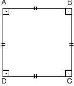
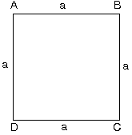
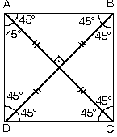
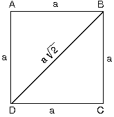

1. Kare
| Bütün kenar uzunlukları eşit ve bütün açıları 90° olan dörtgene kare denir. |  |
2. Karenin Alanı
Bir kenarı a olan karenin alanı
|
 |
3. Karenin Özellikleri
| a. Karenin köşegenleri birbirini dik ortalar.Köşegenlerin kenarlarla yaptığı açılar 45° dir. |  |
b. Bir kenarı a olan karenin köşegeni
|
 |